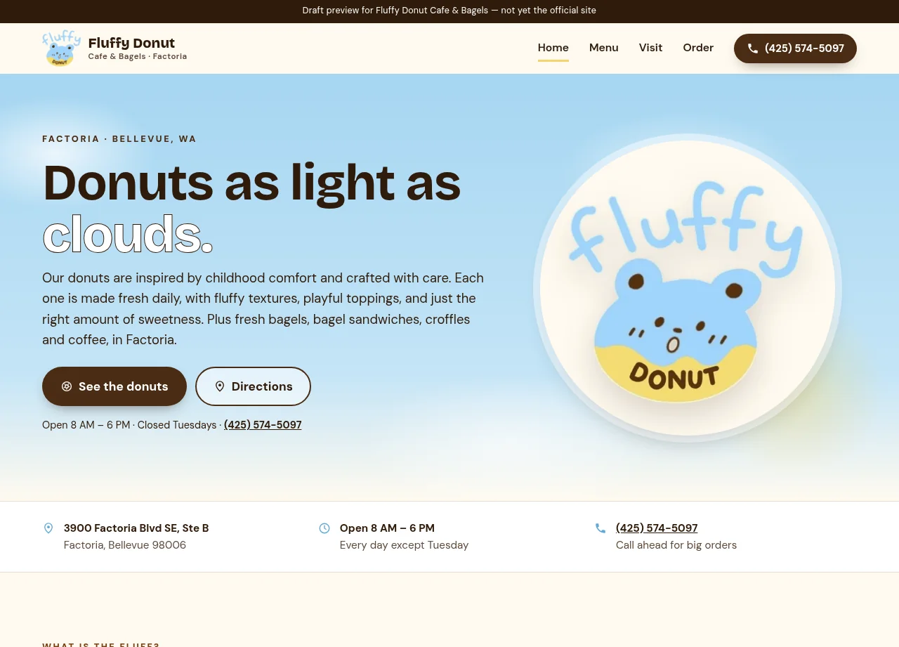

01 / Problem
The product challenge
A DNSSEC failure on the Wix domain left the shop hard to find, and the remaining site described West Seattle. Someone heading to Factoria needed that counter’s donuts, hours, and a map.
Cafe / Menu / Local shop
A Factoria-specific sample site for a donut and bagel shop. The shop’s Wix domain failed DNSSEC, and the site that remained covered West Seattle rather than this counter. The preview gives Factoria its own menu, hours, map, and paths for walk-in, call-ahead, and delivery apps.

The experience at a glance
The page names Factoria in the header, then puts the menu, directions, hours, and phone where a first visit can use them.
Visit the preview ↗This case study describes a draft pitch preview and the design decisions visible in that preview. It is not the business’s official site, and it does not claim the business hired this work or published it on their domain.
01 / Problem
A DNSSEC failure on the Wix domain left the shop hard to find, and the remaining site described West Seattle. Someone heading to Factoria needed that counter’s donuts, hours, and a map.
02 / Design intent
One Factoria page that answers where, when, and how—walk in, call ahead, or use a delivery app—before asking anyone to order.
03 / Key decisions
04 / Interaction & usability
Directions and the phone number are available from the hero. The Tuesday closure is repeated next to the hours so it is not only in a footer.
05 / Tools & skills
Local-business information architecture, menu presentation, hours and location patterns, responsive layout, and front-end implementation.
06 / What I’d improve next
The same Factoria page can stay specific to this counter even if the West Seattle shop keeps a site of its own.
Open the preview ↗Next project / Let’s work together